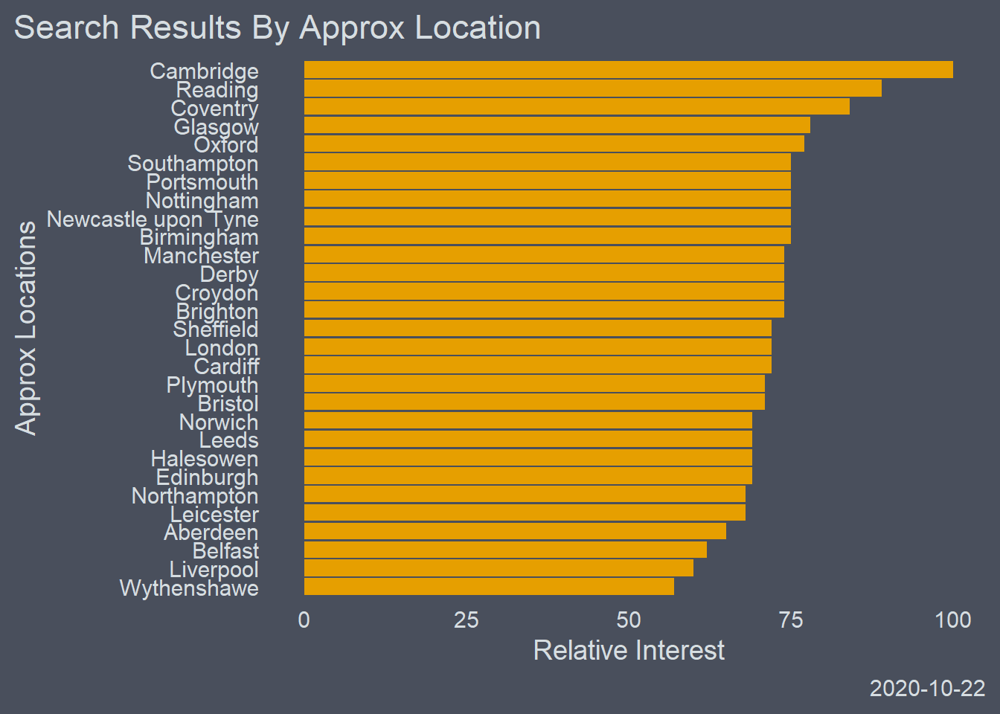

Internet search volume and web page hits can provide interesting insights into the collective unconscious (read the minds of bored 20 - somethings on furlough)
This is nice quick introduction to two straight forward packages, googletrendsR and wikipediatrend.
There will also be a cursory flirt with Facebook’s Prophet, a forecasting package.
So lets call in our libraries
#~~~~~~~~~~~~~~~~~~~~~~~~~~~~~~~~~~~~~~~~
options(scipen = 999)
library(gtrendsR)
library(tidyverse)
library(ggcharts)
library(ggsci)
library(ggthemes)The query requires a few different arguments which we can define before hand.
The + between the terms in the keyword vector ensures that those words appear in that order.
#define the keywords
keywords <- c('Artificial+neural+network')
# Choose Location --------------------------------------------------------
country=c('GB')
# Define Time Fram -------------------------------------------------
time_frame = ("2014-01-01 2020-05-30")
#set channels
channel='web'Here we have the final query, which will return us a list of dataframes
trends <- gtrends(keywords, gprop = channel, geo = 'GB', time = time_frame )
str(trends)## List of 7
## $ interest_over_time :'data.frame': 77 obs. of 7 variables:
## ..$ date : POSIXct[1:77], format: "2014-01-01" "2014-02-01" ...
## ..$ hits : int [1:77] 87 89 89 83 83 82 80 82 86 88 ...
## ..$ keyword : chr [1:77] "Artificial+neural+network" "Artificial+neural+network" "Artificial+neural+network" "Artificial+neural+network" ...
## ..$ geo : chr [1:77] "GB" "GB" "GB" "GB" ...
## ..$ time : chr [1:77] "2014-01-01 2020-05-30" "2014-01-01 2020-05-30" "2014-01-01 2020-05-30" "2014-01-01 2020-05-30" ...
## ..$ gprop : chr [1:77] "web" "web" "web" "web" ...
## ..$ category: int [1:77] 0 0 0 0 0 0 0 0 0 0 ...
## $ interest_by_country: NULL
## $ interest_by_region :'data.frame': 4 obs. of 5 variables:
## ..$ location: chr [1:4] "England" "Scotland" "Wales" "Northern Ireland"
## ..$ hits : int [1:4] 100 97 93 80
## ..$ keyword : Factor w/ 1 level "Artificial + neural + network": 1 1 1 1
## ..$ geo : chr [1:4] "GB" "GB" "GB" "GB"
## ..$ gprop : chr [1:4] "web" "web" "web" "web"
## $ interest_by_dma : NULL
## $ interest_by_city :'data.frame': 93 obs. of 5 variables:
## ..$ location: chr [1:93] "Milton Keynes" "Cambridge" "Coventry" "Warrington" ...
## ..$ hits : int [1:93] NA 100 92 NA 90 NA NA NA NA 87 ...
## ..$ keyword : Factor w/ 1 level "Artificial + neural + network": 1 1 1 1 1 1 1 1 1 1 ...
## ..$ geo : chr [1:93] "GB" "GB" "GB" "GB" ...
## ..$ gprop : chr [1:93] "web" "web" "web" "web" ...
## $ related_topics :'data.frame': 44 obs. of 6 variables:
## ..$ subject : chr [1:44] "100" "22" "21" "12" ...
## ..$ related_topics: chr [1:44] "top" "top" "top" "top" ...
## ..$ value : chr [1:44] "Computer network" "Network Rail" "Rail transport" "Artificial turf" ...
## ..$ geo : chr [1:44] "GB" "GB" "GB" "GB" ...
## ..$ keyword : chr [1:44] "Artificial+neural+network" "Artificial+neural+network" "Artificial+neural+network" "Artificial+neural+network" ...
## ..$ category : int [1:44] 0 0 0 0 0 0 0 0 0 0 ...
## ..- attr(*, "reshapeLong")=List of 4
## .. ..$ varying:List of 1
## .. .. ..$ value: chr "top"
## .. .. ..- attr(*, "v.names")= chr "value"
## .. .. ..- attr(*, "times")= chr "top"
## .. ..$ v.names: chr "value"
## .. ..$ idvar : chr "id"
## .. ..$ timevar: chr "related_topics"
## $ related_queries :'data.frame': 50 obs. of 6 variables:
## ..$ subject : chr [1:50] "100" "66" "50" "33" ...
## ..$ related_queries: chr [1:50] "top" "top" "top" "top" ...
## ..$ value : chr [1:50] "network rail" "how to network" "artificial grass" "wwe network" ...
## ..$ geo : chr [1:50] "GB" "GB" "GB" "GB" ...
## ..$ keyword : chr [1:50] "Artificial+neural+network" "Artificial+neural+network" "Artificial+neural+network" "Artificial+neural+network" ...
## ..$ category : int [1:50] 0 0 0 0 0 0 0 0 0 0 ...
## ..- attr(*, "reshapeLong")=List of 4
## .. ..$ varying:List of 1
## .. .. ..$ value: chr "top"
## .. .. ..- attr(*, "v.names")= chr "value"
## .. .. ..- attr(*, "times")= chr "top"
## .. ..$ v.names: chr "value"
## .. ..$ idvar : chr "id"
## .. ..$ timevar: chr "related_queries"
## - attr(*, "class")= chr [1:2] "gtrends" "list"We can access the elements of the list we would like and assign them to a variable. I have creatively named them as seen below.
The city data seems quite suspect to me and is undoubtedly a case of search locations being grouped to the nearest ‘city’
time_trend <- trends$interest_over_time
city <- trends$interest_by_city# A little bit of cleaning ------------------------------------------------
library(forcats)
city <- na.omit(city)
# Lets take a look --------------------------------------------------------
ggplot(city, aes( reorder(location, hits), hits)) +
geom_col(fill ="#E69F00", show.legend = FALSE) +
coord_flip() +
labs(title = 'Search Results By Approx Location',
y = 'Relative Interest',
x ='Approx Locations',
caption = Sys.Date()) +
theme_hermit()